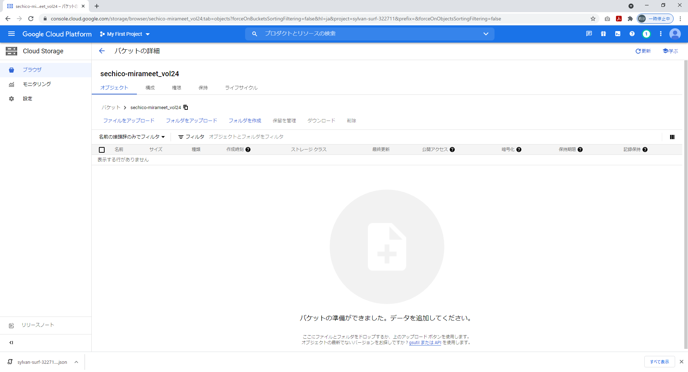
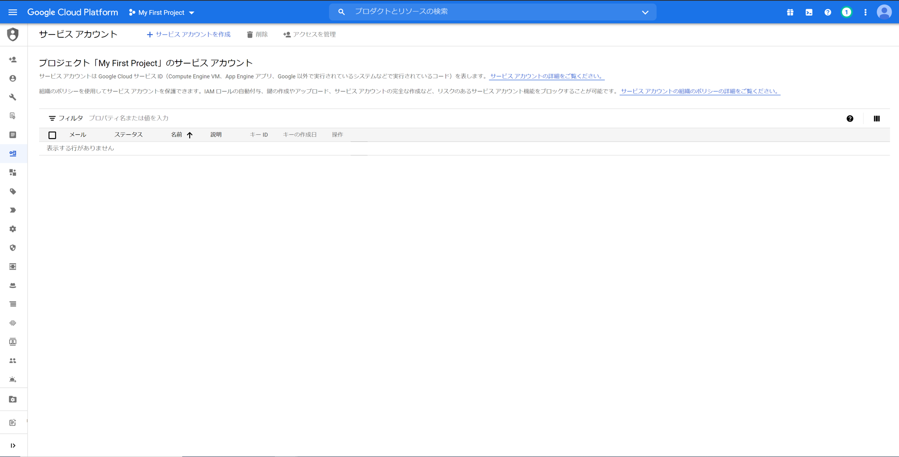
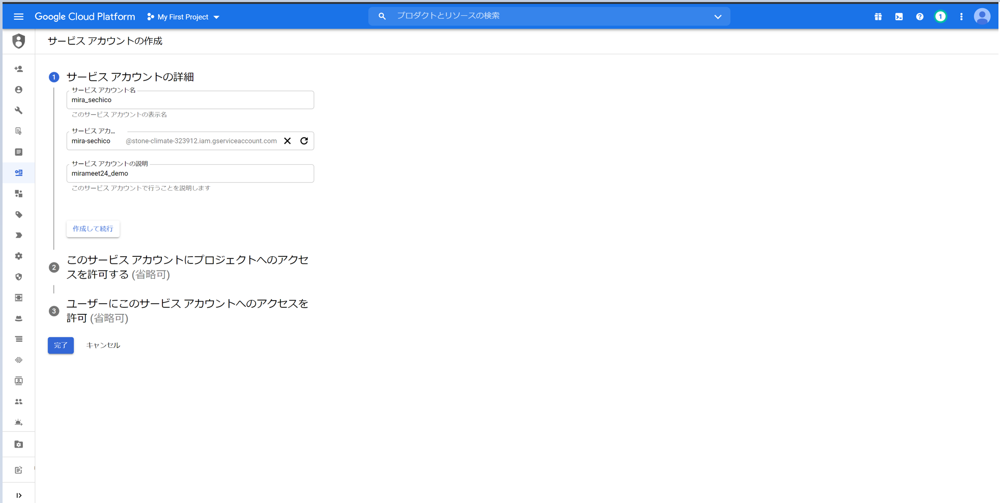
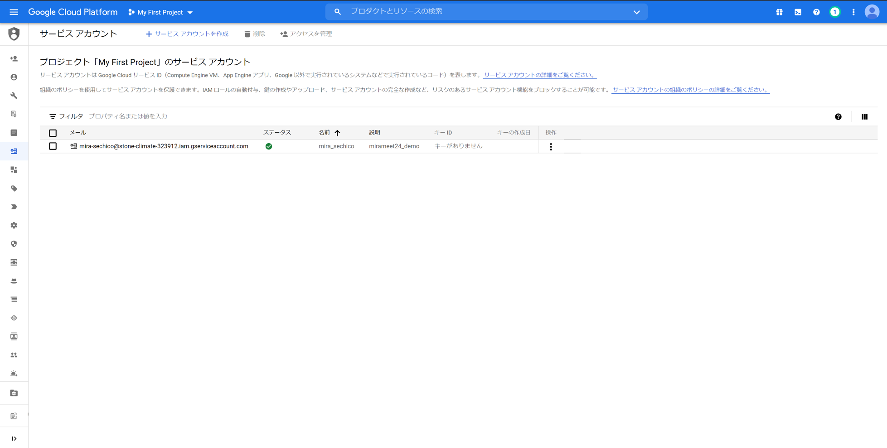
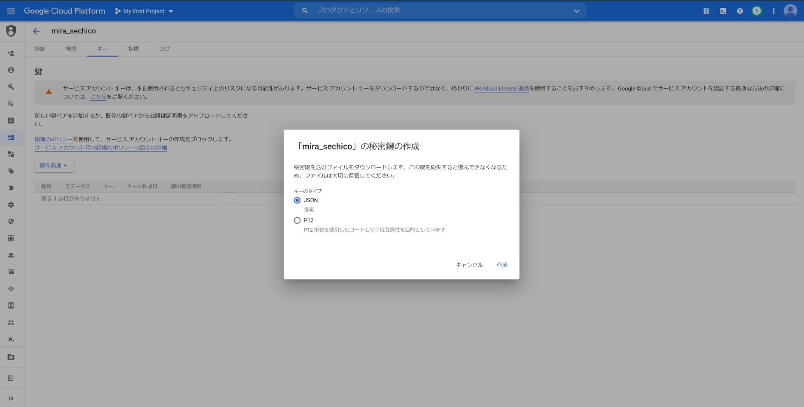
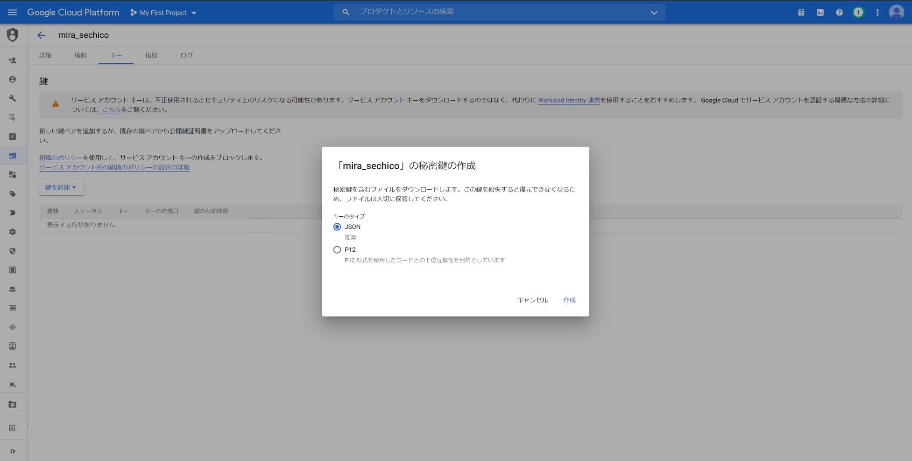
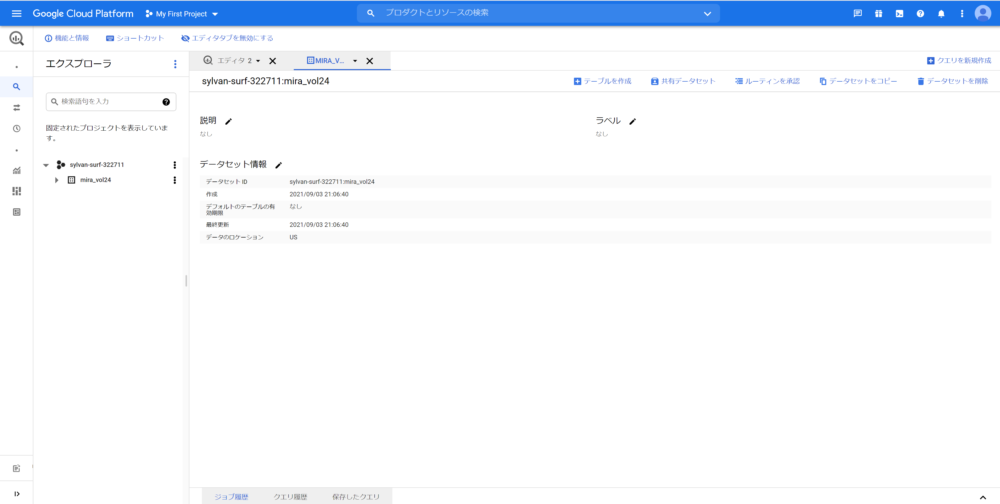

GCP各種サービスの設定
この手順では次の手順を進めていきます。
1. GCSバケット作成
グローバルに一意になるように各自設定を行います。
 ↓作成完了
↓作成完了

2. GCS内権限設定
GCSの権限を「ストレージ管理者」に設定します。
3. サービスアカウントの作成


 ↓作成完了
↓作成完了

4. 秘密鍵ファイルの取得・配置
 
※json形式のキーをダウンロード

※json形式のキーをダウンロード ダウンロードした秘密鍵ファイルを、配置する。
ダウンロードした秘密鍵ファイルを、配置する。
・配置先
mirameet_vol24\credential
・ファイル名
key.json
5. BigQueryAPIの有効化

 ↓完了
↓完了
6. データセットの作成
 ↓完了
↓完了

7. テーブルの作成
 \mirameet_vol24\sql\mira_vol24.sql
\mirameet_vol24\sql\mira_vol24.sql
をご自身の作成したデータセットIDに置換してクエリ実行
（例）
CREATE TABLE mira_vol24.mira_example ～～～
↓
CREATE TABLE sechico_0905.mira_example ～～～
↓実行完了
8. OperationObject.pyの編集
8.1. url_gs_example_csv
 「gsutil URI」をコピーして置換
「gsutil URI」をコピーして置換
（例）
url_gs_example_csv="gs://mira-example/gcs-example.csv"
↓
url_gs_example_csv="gs://sechico-mirameet_vol24/gcs-example.csv"
8.2. bucket_name
 「名前」をコピーして置換
「名前」をコピーして置換
（例）
bucket_name = "mira-example"
↓
bucket_name = "sechico-mirameet_vol24"
8.3. project_id

「プロジェクトID」をコピーして置換
（例）
project_id = "erudite-pride-323410"
↓
project_id = "sylvan-surf-322711"
8.4. dataset_id
 「データセットID」をコピーして置換
「データセットID」をコピーして置換
（例）
dataset_id = "mira_vol24"
↓
dataset_id = "sechico_0905"
8.5. table_id ←テーブル作成時のクエリから変えている場合
 「テーブルID」をコピーして置換
「テーブルID」をコピーして置換
（例）
table_id = "mira-example"
↓
table_id = "mira-example" ←テーブル作成時のクエリ